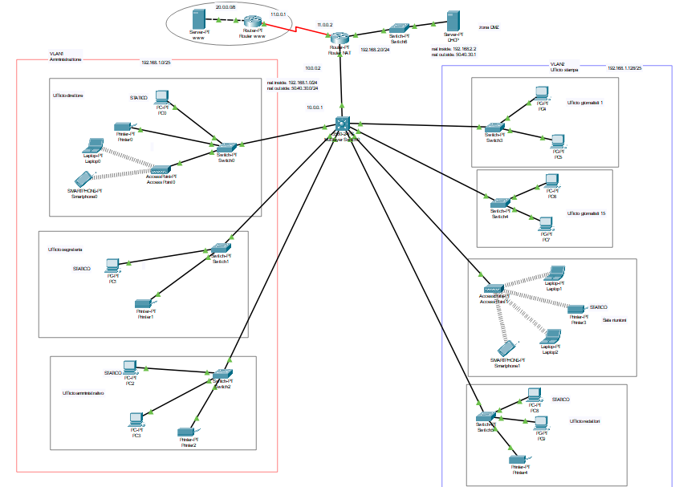
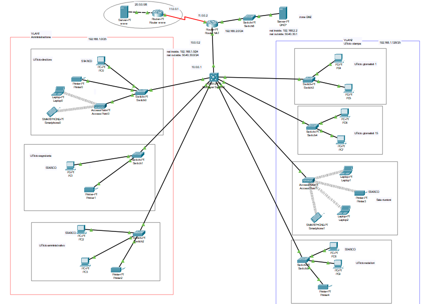

Progetto finale Sistemi e Reti 4°CI
Per la realizzazione del progetto, è stato deciso di utilizzare:

Per la rete è stato scelto l’indirizzo ip privato 192.168.1.0 con maschera 255.255.255.0. Come gateway è stato scelto l’indirizzo 192.168.1.1. La rete è stata divisa in due VLAN (Virtual Local Area Network) con indirizzi 192.168.1.0 (maschera 255.255.255.128, 25 bit) e 192.168.1.128 (maschera 255.255.255.128, 25 bit). Inizialmente si è pensato di impostare le interfacce interne 192.168.1.0/24 (dividendo la rete in tre sottoreti), però, per evitare di avere indirizzi in eccesso, alla fine di è deciso di lasciare due indirizzi di classe A (10.0.0.0/8). Dopo aver collegato i dispositivi terminali ai relativi switch e router, tramite lo switch multilayer, è stata divisa la rete in due VLAN (con indirizzi precedentemente riportati) tramite i seguenti comandi
Gli indirizzi sono statici sono stati assegnati tramite GUI
Sono stati assegnati indirizzi statici ad alcuni dispositivi perché ritenuti di importanza maggiore, in quanto hanno bisogno di avere tali indirizzi per essere facilmente riconosciuti dall’intera rete; essi sono:
Dopodiché è stato configurato il server DHCP e gli è stato assegnato l’indirizzo 192.168.2.2 (con gateway 192.168.2.1). Si è preferito scegliere un indirizzamento dinamico con l’aiuto del server per avere una maggiore separazione dei compiti rispetto ad una configurazione DHCP sul router (in questo caso eseguibile anche sullo switch multilayer). Inoltre è stato impostato l’helper address sul multilayer, il tutto tramite i seguenti comandi
È stato successivamente impostato il NAT dinamico, ponendo come NAT inside 192.168.1.0/24, da tradurre in 50.40.30.0/24, e come NAT outside l’interfaccia che va verso il router ISP. Il tutto è stato configurato attraverso i seguenti comandi
È stato caricato il presente sito sul server (con servizio http-https) nella rete 20.0.0.0/8 del router www, in modo da fornire l’accesso allo stesso da parte dei nodi della rete configurata.
- 2 router: il primo utilizzato come router NAT ed il secondo utilizzato con lo scopo di simulare l’accesso alla rete fornita dall’ISP;
- 2 server (di cui uno DHCP e l’altro http): un server è stato utilizzato per l’attribuzione degli indirizzi dinamici ai client (DHCP). L’altro server è stato usato per fornire l’accesso ad Internet, con un esempio di pagina web caricata al suo interno.
- 1 switch multilayer: utilizzato per smistare la connessione dal router NAT agli switch dei singoli uffici e dividere la rete in due VLAN.
- 7 switch: uno per ogni ufficio (a parte per la Sala Riunioni che è fornita di dispositivi wireless) e uno per unire il server DHCP e router NAT.
- 2 access point: utilizzati per fornire la rete ai dispositivi wireless.
- 10 PC client;
- 3 laptop (tutti wireless);
- 5 stampanti (di cui 1 wireless);
- 2 telefoni cellulari (entrambi wireless).

Per la rete è stato scelto l’indirizzo ip privato 192.168.1.0 con maschera 255.255.255.0. Come gateway è stato scelto l’indirizzo 192.168.1.1. La rete è stata divisa in due VLAN (Virtual Local Area Network) con indirizzi 192.168.1.0 (maschera 255.255.255.128, 25 bit) e 192.168.1.128 (maschera 255.255.255.128, 25 bit). Inizialmente si è pensato di impostare le interfacce interne 192.168.1.0/24 (dividendo la rete in tre sottoreti), però, per evitare di avere indirizzi in eccesso, alla fine di è deciso di lasciare due indirizzi di classe A (10.0.0.0/8). Dopo aver collegato i dispositivi terminali ai relativi switch e router, tramite lo switch multilayer, è stata divisa la rete in due VLAN (con indirizzi precedentemente riportati) tramite i seguenti comandi
Gli indirizzi sono statici sono stati assegnati tramite GUI
Sono stati assegnati indirizzi statici ad alcuni dispositivi perché ritenuti di importanza maggiore, in quanto hanno bisogno di avere tali indirizzi per essere facilmente riconosciuti dall’intera rete; essi sono:
- VLAN1
PC0 (Ufficio direttore): 192.168.1.2;
PC1 (Ufficio segreteria): 192.168.1.3;
PC2 (Ufficio amministrativo): 192.168.1.4;
- VLAN2
Printer3 (Sala riunioni): 192.168.1.130;
PC8 (Ufficio redattori): 192.168.131.
Dopodiché è stato configurato il server DHCP e gli è stato assegnato l’indirizzo 192.168.2.2 (con gateway 192.168.2.1). Si è preferito scegliere un indirizzamento dinamico con l’aiuto del server per avere una maggiore separazione dei compiti rispetto ad una configurazione DHCP sul router (in questo caso eseguibile anche sullo switch multilayer). Inoltre è stato impostato l’helper address sul multilayer, il tutto tramite i seguenti comandi
È stato successivamente impostato il NAT dinamico, ponendo come NAT inside 192.168.1.0/24, da tradurre in 50.40.30.0/24, e come NAT outside l’interfaccia che va verso il router ISP. Il tutto è stato configurato attraverso i seguenti comandi
È stato caricato il presente sito sul server (con servizio http-https) nella rete 20.0.0.0/8 del router www, in modo da fornire l’accesso allo stesso da parte dei nodi della rete configurata.
Comandi configurazione VLAN:
Switch>en
Switch#vlan database
Switch(vlan)#vlan 10 name amministrazione
Switch(vlan)#vlan 20 name ufficiostampa
Switch(vlan)#exit
Switch#conf t
Switch(config)#int vlan 10
Switch(config-if)#ip address 192.168.1.0 255.255.255.0
Switch(config-if)#exit
Switch(config)#int vlan 20
Switch(config-if)#ip address 192.168.1.128 255.255.255.0
Comandi configurazione routing statico:
Switch>en
Switch#conf t
Switch(config)#int fa0/1
Switch(config-if)#no switchport
Switch(config-if)#ip address 10.0.0.2 255.0.0.0
Router>en
Router#conf t
Router(config)#int fa0/0
Router(config-if)#ip address 10.0.0.1 255.0.0.0
Comandi configurazione server DHCP e Helper Address:
Switch>en
Switch#conf t
Switch(config)#int vlan 10
Switch(config-if)#ip helper-address 192.168.2.2
Switch(config-if)#exit
Switch(config)#int vlan 20
Switch(config-if)#ip helper-address 192.168.2.2
Switch(config-if)#exit
Switch(config)#int fa0/1
Switch(config-if)#ip helper-address 192.168.2.2
Comandi configurazione NAT dinamico:
Router>en
Router#conf t
Router(config)#ip nat pool rete 50.40.30.2 50.40.30.25 netmask 255.255.255.0
Router(config)#access-list 1 permit 192.168.1.0 0.0.0.255
Router(config)#int fa0/0
Router(config-if)#ip nat inside
Router(config-if)#exit
Router(config)#int se2/0
Router(config-if)#ip nat outside
Router(config-if)#exit
Router(config)#ip nat inside source list 1 pool rete
Router(config)#
Router(config)#ip nat inside source static 192.168.2.2 50.40.30.1
Router(config)#int fa1/0
Router(config-if)#ip nat inside